SkillPilot Whitepaper (EN)
Version: 1.0.21 Date: September 2026 Project: SkillPilot
Summary
SkillPilot connects to existing curricula and uses them as the normative source of truth (e.g., state curricula, module handbooks, standards like CEFR). SkillPilot does not replace these standards; it translates them into a versioned, machine-readable skill graph as an operational model. Learners, teachers, and an AI learning coach use this graph as a machine-readable map. This allows the learner to move safely from their current skill state to their skill goals. Runtime authority for learning state, Personal Curriculum, current focus, active goal, rules, and next steps sits in the backend state; the AI learning coach leads the dialogue by relying on this exact backend logic.
To achieve this, the system records learning achievements on atomic skill goals and derives the mastery level for higher-level topics. On this basis, the path via the next attainable skill goals leads systematically to individual educational objectives.
Learning plans add a time frame to this navigation: Which parts of the Personal Curriculum should be achieved by when? In the locally implemented plan-guided learning extension, daily requirements from all planned subjects are combined. The coach reports progress in chat and guides the learner to the next learnable goal, without requiring learners to manage plan sections or select learning goals themselves (see section 3.4).
Quality assurance is anchored in a practice-driven Champion program and the open-source workflow (Issues/PRs).
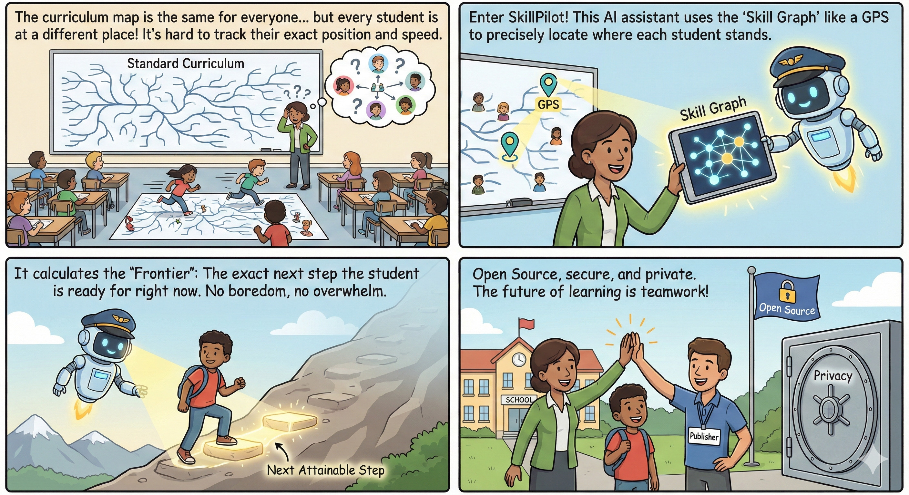
SkillGraph Processing
SkillGraph Processing structures curricula and competence models into dependency-aware skill landscapes that can be validated, explored, and used by humans or AI agents. In the web interface, this becomes a Personal Curriculum with a clearly identified education context.
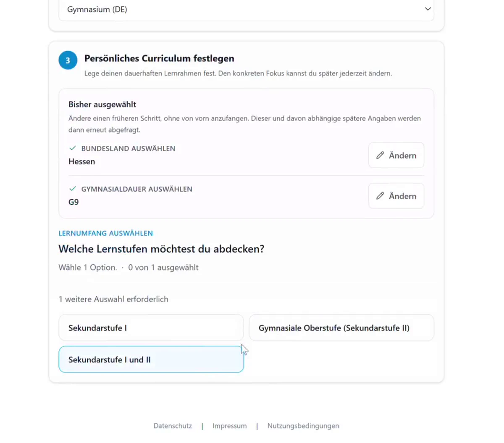
The current screenshots show a German learning context. Selecting an English context uses the same workflow and makes the learning coach communicate in English.
SkillPilot Learning Coach
SkillPilot Learning Coach guides learners through those landscapes with frontier-based next steps, mastery tracking, and contextual learning-coach support.
SkillPilot Coach v1 is currently undergoing OpenAI publication review and is not yet publicly listed. The supported coaching surface is ChatGPT in a browser. The responsive first-party SkillPilot web app can also be used in a mobile browser, for example for speech input and uploading photos of written work. Native ChatGPT apps are not currently part of the supported SkillPilot workflow.
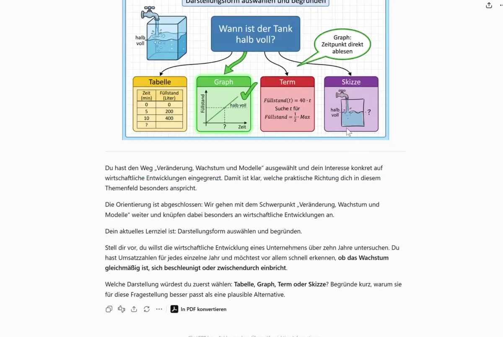
How to read this whitepaper: Unless stated otherwise, the text describes the current state. Phrases such as planned, in the roadmap, or in later stages mark forward-looking items.
1. The Challenge: Individual Skill Navigation Does Not Scale
Education follows curricula that are defined by the state or through accreditation. In practice, there is a gap between curriculum and learning reality:
- Learners do not start at the same point (prior knowledge, pace, gaps).
- Teachers still have to guide many people in parallel, often in large cohorts.
- Learning goals usually exist as text, but not as a navigable structure with dependencies and sensible next steps.
This leads to overload for some, boredom for others, and high effort to track learning states and next steps.
SkillPilot closes this tool gap: outcome-oriented navigation in the curriculum without turning teachers into "bookkeepers." SkillPilot builds on the existing curriculum - it does not create new standards, it makes existing standards operational and navigable.
2. The Shift: Why Hybrid AI Systems Are the Right Approach
Since late 2022, the world of language-based AI has developed rapidly. A sense of this pace is provided by a look at Humanity's Last Exam, the toughest AI benchmark to date. Introduced in early 2025 to test AI systems with thousands of extreme expert questions for true logical reasoning rather than mere knowledge, leading models were still failing almost completely at the beginning of the year (under 10% success), but were able to quintuple this performance to about 50% by year-end.
As of December 2025, leading AI systems are thus professionally and linguistically up to many topics taught at schools and universities. But they have limits: They are not trained pedagogues and do not work like algorithmically exact bookkeeping programs that calculate and manage without error.
To ensure the algorithmic precision required for SkillPilot in navigating learning goals, another trend benefits us: coupling language models to classical software. Standards are being established that allow systems like ChatGPT to specifically call interfaces (APIs) of classical programs.
The approach for SkillPilot follows almost automatically: it emerges as a hybrid application. Classical, exact software handles the precise "bookkeeping" and navigation of skill goals in the background. Leading language models are instructed (as the SkillPilot Learning Coach) to speak with learners as empathetic learning coaches, but use the software's exact logic in the background for learning progress.
3. The Product: How SkillPilot Works
3.1 The Technology: The Skill Graph (Operational Model & Frontier)
SkillPilot replaces linear lists with a connected graph.
The separation of layers matters: the official curriculum remains the normative source. The versioned skill graph is the derived operational model. At runtime, the backend state is the authoritative source for current learning state, Personal Curriculum, current focus, active goal, and allowed transitions.
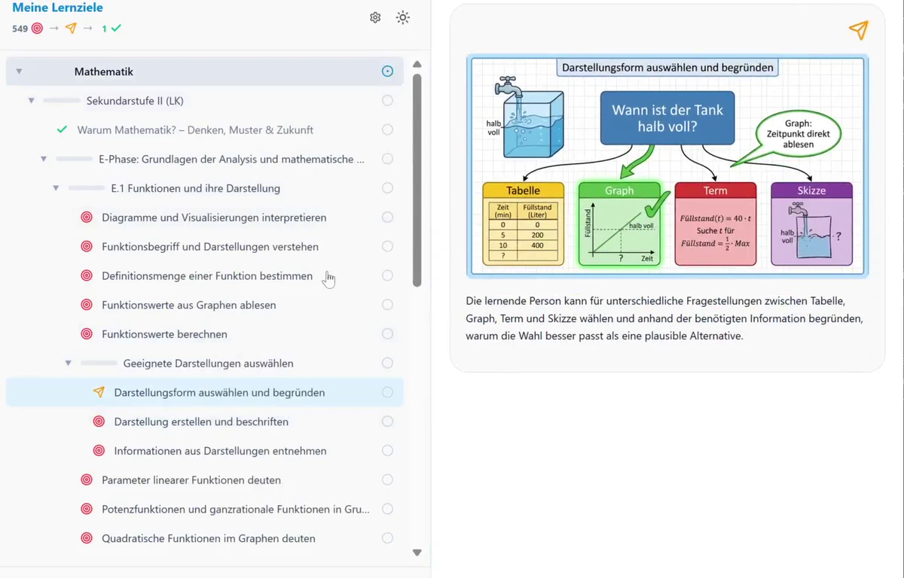
Plugging into Existing Curricula (Raw Input & Traceability)
SkillPilot does not "invent" curricula: curricula, module handbooks, or standards serve as raw input and are translated into a skill graph.
The integrity of the graph is ensured by a formal mathematical specification (Acyclicity, Effective Requires, Transitive Minimality), which prevents circular references and logically validates dependencies.
This is about:
- Operationalization: learning outcomes are broken down into atomic skill goals (without changing the standard).
- Traceability: each skill remains traceable to source/section/version.
- Navigability: prerequisites and hierarchies are modeled explicitly so paths are plannable (didactic prereqs possibly as overlay). The overall graph does not enforce a single teaching path; it allows multiple didactically meaningful routes. Inside a selected scope or an explicitly modeled target route, SkillPilot then deliberately narrows the next steps to the relevant subset. In the default mode, prerequisites are checked within the selected focus. Optional Strict Mode also enforces prerequisites globally and can therefore expose missing foundations outside that focus.
- Governance: changes currently run via GitHub (Issues/PRs), with versioning through GitHub history (see section 6).
Map: Nodes & Edges
- Nodes: atomic skills ("can explain/apply X") and clusters (topics/modules).
- Edges:
- Prerequisites: "A before B"
- Contains/Part-of: "X includes Y and Z"
Three Learning Modes / Node Types in Practice
SkillPilot distinguishes three node types that reflect different learning modes:
- Understanding: Ordinary content learning goals are explained and practiced with the AI learning coach.
- Memorization: Individual facts are memorized in a targeted way (modern flashcard principle).
- Independent problem solving: Final-exam tasks are solved independently (e.g., on paper, photographed, and uploaded), immediately graded (points, pass/fail, errors), and then explained.
These three types describe learning modes. The didactic route described in section 3.3 is a separate layer: it arranges steps such as motivation, understanding, memorization, and application along a path. Motivation is therefore a didactic phase; when modeled explicitly in a curriculum, it appears as a route node, not as a fourth base type.
In mathematics within the Gymnasium landscapes, all three node types are used.
Formal specification: The mathematical definition of the graph (e.g., acyclicity, Effective Requires) is publicly documented: Graph definition
Frontier: Next Reachable Steps
SkillPilot computes the frontier relative to the active scope or filter: skills whose prerequisites are met inside that active graph slice but are not yet mastered. This avoids jumps and keeps learning in the zone of sensible next steps. We call this boundary of current knowledge the Frontier (didactically: Zone of Proximal Development according to Vygotsky). It marks exactly the skills that are learnable next within the current filter. The frontier is not an AI recommendation, but the mathematically computed set of logically unlocked learning goals in the active graph slice. Optional Strict Mode also considers prerequisites globally and can expose missing foundations outside the current focus.
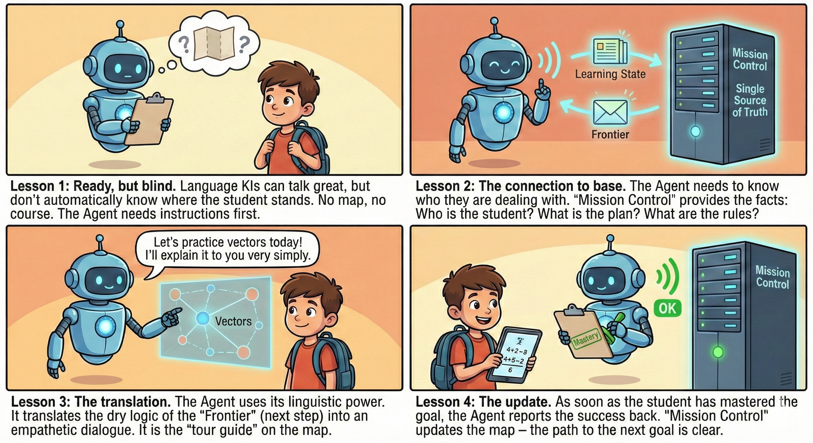
3.2 The Interaction Layer: The AI learning coach
The skill graph provides the route, but learners do not interact with datasets; they need a guide. This role is taken by the SkillPilot Learning Coach as the AI learning coach. It serves as an intuitive interface that translates the abstract instructions of the graph into natural, motivating language.
The learning coach is not a "black box" but acts strictly based on backend logic: it receives the active scope, frontier, next goal, and allowed transitions from the backend, and turns them into a didactically meaningful dialogue. This turns "exact bookkeeping" into a personal learning experience.
Focus Instead of Distraction
The frontier calculated in chapter 3.1 for the active scope serves as a focus filter for the learning coach: from the full set, only content that fits the goal and current state is shown - the next feasible step instead of "everything at once".
Mastery: Progress as an Evidence Model
The current Cockpit view separates ordinary flashcard practice from evidence-bearing Verified Recall.
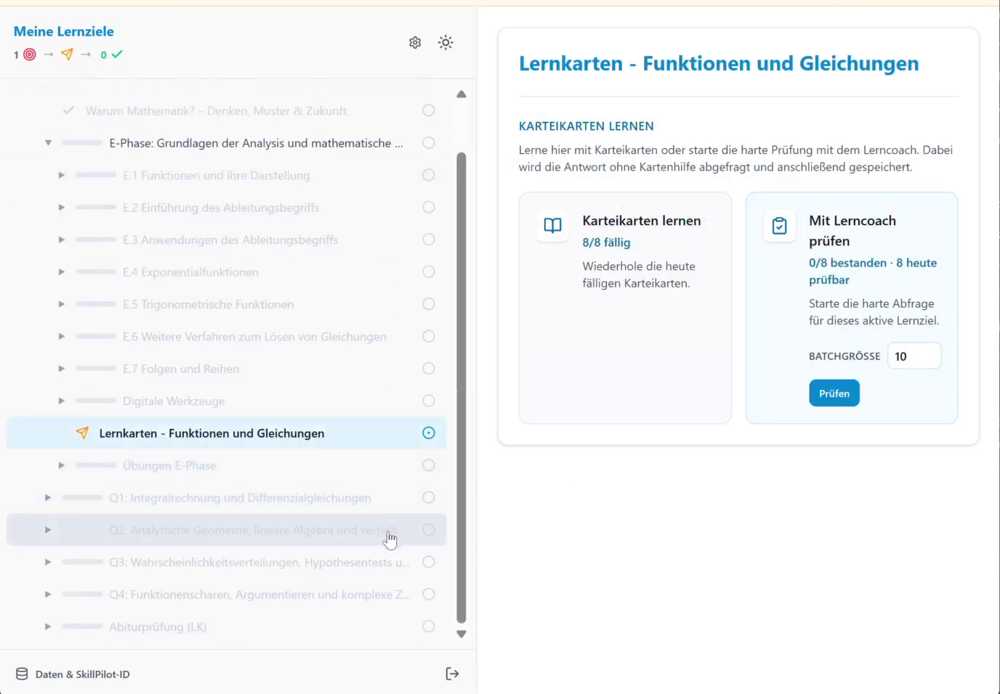
Mastery is the backend-owned learning state on atomic goals, not a chat log. For ordinary atomic goals, it can be adjusted in the Cockpit or stored by the learning coach only after sufficient evidence. Orientation nodes use a completion marker only and do not certify subject mastery. For memorization nodes, mastery is derived from server-side card state and strict Verified Recall; ordinary flashcard practice changes only the repetition schedule. Cluster progress is aggregated from contained goals using their weights.
The central state remains separate from complete dialogues and additional artifacts. Further evidence can be added institutionally through artifacts or references.
SkillPilot makes progress visible - the institution decides which evidence has which consequences.
Learning Velocity
Learning velocity shows how many atomic goals are newly mastered per week - a simple indicator of rhythm and continuity.
3.3 The Hybrid Learning Loop: Understanding + Memorizing + Practice
Not every learning goal is learned the same way: concepts need understanding and application, facts need repetition, and many skills require active doing (e.g., programming, calculating, writing). In assessments, this kind of independent problem solving is exactly what counts.
The Path to Exam Readiness ("Get me ready for finals") In practice, students rarely learn isolated topics. They usually pursue an overarching end goal. The typical approach is to define a fixed context - for example, "Advanced Physics Course, Hesse, Final Exam Preparation." As soon as this context is defined in SkillPilot, the system bundles all relevant learning routes from the full landscape that lead to the required exam competencies. Learners are then guided by the learning coach systematically along these routes. This target route is therefore a selection inside the larger graph, not the graph's only possible path.
The System of Learning Paths (The didactic route) Within this curriculum, the path is not left to chance. Depending on the curriculum and goal type, a topic route may connect several didactic roles and lead toward independent application or an appropriate practice or assessment node.
A typical subject-learning route may connect the following roles: 1. Motivation ("Why are we learning this?"): Where an orientation node is modeled, it frames why the following topic may be relevant. 2. Understanding (Guided Learning): In Socratic dialogue with the AI learning coach, a new concept is introduced with guidance and understanding is built step by step. 3. Memorization (Drill): Where compact facts or formulas must be recalled reliably, they are reinforced through the integrated flashcard system. 4. Application: Appropriate practice, autonomy, or assessment nodes lead to independent problem solving; the learning coach can then evaluate and provide feedback.
These roles are not a rigid four-step sequence. They do not replace the three learning modes introduced above; they may connect those modes, together with optional orientation nodes, into an appropriate route.
One possible short form of such a route, where memorization is appropriate: Understand why this is relevant for me -> build understanding through guided familiarization -> memorize in parallel -> independently develop solutions.
Here is a schematic example of a motivation/understanding/application route as it can be modeled in SkillPilot and exported as PDF.

While learning coach interaction is valuable for understanding and for evaluating/explaining exam solutions, pure memorization (vocabulary, formulas, facts) is more efficient with spaced repetition.
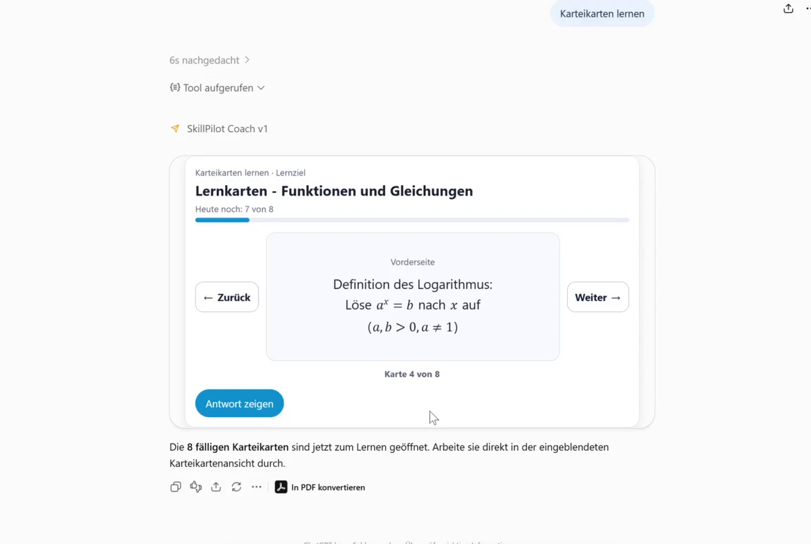
SkillPilot integrates a flashcard drill engine (SRS):
- Competence loop: the skill graph defines what comes next.
- Memorization loop: the drill engine optimizes how to repeat (intervals, prioritization; e.g., SuperMemo-2).
SkillPilot already uses approved practice and assessment nodes for suitable scopes. Additional practice and assessment formats for "doing" skills (e.g., problem sets, programming tasks, writing/speaking exercises) remain areas for further development.
Technical Implications: Target Route in Backend, UI, and learning coach
- Backend (didactic route logic): The target route is not a free AI computation. It is a modeled sub-route inside the larger graph under DAG constraints. This means human curriculum authors (champions) retain pedagogical control. The Personal Curriculum (Level 2) is configured exclusively in the first-party SkillPilot web app. SkillPilot Coach v1 neither asks for nor changes that configuration. In chat, the learning coach can change only the current focus and active goal (Level 3), using backend-approved options and with the learner's consent.
- UI/UX (route visualization): Learners configure their Personal Curriculum in the first-party web app. In the Cockpit, they can see and change the current focus and active goal; the interface shows progress and next reachable goals within that context.
- AI learning coach (didactic context): The learning coach operates strictly on the confirmed context, current focus, and transitions allowed by the backend, and explains transparently why the current step is appropriate.
3.4 From Curriculum to Daily Learning: Learning Plans and Coach Guidance
A navigable curriculum does not yet answer the everyday question: “What do I need to learn today, and how far have I got?” SkillPilot addresses this by connecting the Personal Curriculum to a timed learning plan and guidance from the coach.
Implementation status of this extension (4 September 2026): Cross-subject planning and learner preview are implemented locally; plan-guided chat is prepared in the Claude Coach 1.1.1 candidate. The local OpenAI 1.1 candidate remains disabled. This section does not extend the submitted OpenAI Coach 1.0.0 review contract or claim production availability or completed client acceptance tests.
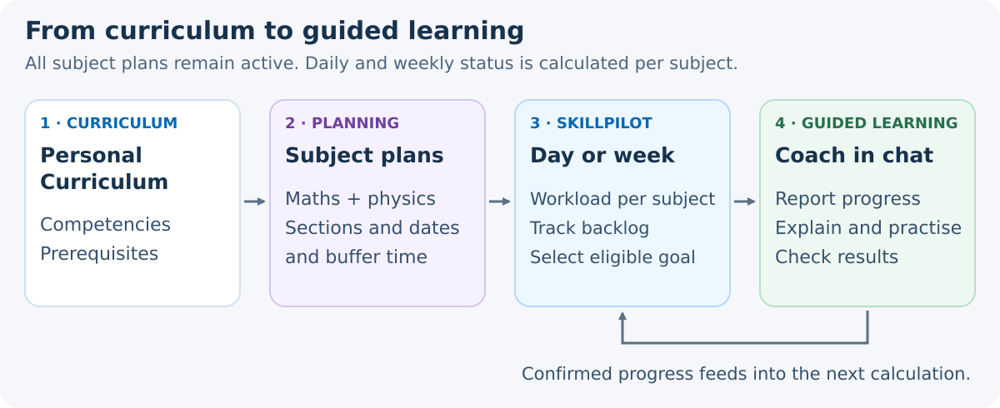
The Teacher Plans the Framework
The Personal Curriculum defines which competencies belong to the selected education context. The learning plan specifies which topics or groups of learning goals should be addressed within which periods. It complements the skill graph without replacing its goals or prerequisites. To work through an entire curriculum, the plan must cover its intended scope; completing a partial plan does not automatically mean completing the curriculum.
Under “Course planning”, teachers prepare learning sections, date ranges, buffer time, and milestones. Subject plans, for example for mathematics and physics, apply together: their daily requirements add up across all subjects. Switching the current subject does not deactivate another subject plan or impose an order such as “finish all of mathematics before physics.” Overlapping sections within a subject plan do not count the same goal twice.
The learner preview shows today's requirements and the next seven calendar days before changes are applied. It uses the same calculation as the chat. The baseline schedules weekdays from Monday to Friday; it does not automatically optimize around timetables or holidays. Goal counts are not learning minutes or a guarantee of meeting a deadline. The teacher reviews scope and workload and adjusts the plan when necessary.
Drafts initially remain on the planning device. Only explicit joint confirmation makes them effective for the learner; later draft edits do not silently alter ongoing learning. Teaching coverage is not learner mastery: recording “covered in class” does not establish an individual's competence.
The Learner Works in Chat
With plan mode enabled and a valid learning session, SkillPilot handles the organization in the background:
- Orient: For each subject, the coach reports newly due goals for today, how many are already mastered, how many remain open, and any backlog.
- Resume automatically: A valid ongoing goal is continued; otherwise, a due goal whose prerequisites permit learning is selected, if one is available. Joint activation can already select this first goal. No extra “Continue learning” click or manual goal search is needed.
- Learn and check progress: The coach explains, sets tasks, and supports the work. Only progress recorded under the applicable evidence rules changes the learning state and daily figures. The plan-guided flow then leads to the next permitted step.
- Switch subjects or finish: A request such as “Physics now” switches within the available subject options; other requirements remain in place. Once all effective subject plans can be evaluated reliably and all goals due through today including backlog are completed, the coach reports the day's completion. Future goals do not automatically become extra duties for today.
A status-only question does not start a new task; a requested pause remains a pause. If prerequisites or invalid planning block open goals, the coach reports the blockage instead of inventing completion or a replacement duty. Plan corrections remain on the planning side. An expired learning session still requires a fresh start through SkillPilot; chat guidance does not extend the session.
Example: Mathematics and Physics on the Same Day
The figures below are an illustrative calculation, not live data:
- Mathematics: 4 newly due goals today, of which 2 are mastered and 2 remain open; plus 1 open goal from earlier days.
- Physics: 3 newly due goals today, of which 1 is mastered and 2 remain open; plus 2 open goals from earlier days.
- Total: 7 newly due goals today, of which 3 are mastered and 4 remain open; together with 3 backlog goals, 7 goals remain to be addressed.
The coach can summarize this as: “Of today's due goals, you have mastered 2 of 4 in mathematics and 1 of 3 in physics. Including backlog, 7 goals remain open in total. We will continue your current mathematics goal; you can also switch to physics.” This example assumes a valid, unfinished mathematics goal and a physics goal that can currently be started.
“Already mastered” describes the current learning state among today's due goals, not necessarily achievements newly earned today. The seven remaining goals are four open newly due goals plus three backlog goals. Backlog stays visible but is not repeatedly added to the weekly workload as newly due goals every day.
This turns the curriculum into a guided learning path: The teacher owns scope and timing, SkillPilot calculates the next permitted steps, the coach leads the dialogue, and the learner concentrates on learning.
4. Trust Architecture: Security & Integrity
4.1 Data Approach: Security, Privacy & Sovereignty by Design
A central pillar of SkillPilot is data separation. The following architecture overview shows how permanent pseudonymous identity, the short-lived learning session, app authorization, and authoritative learning state remain separated.
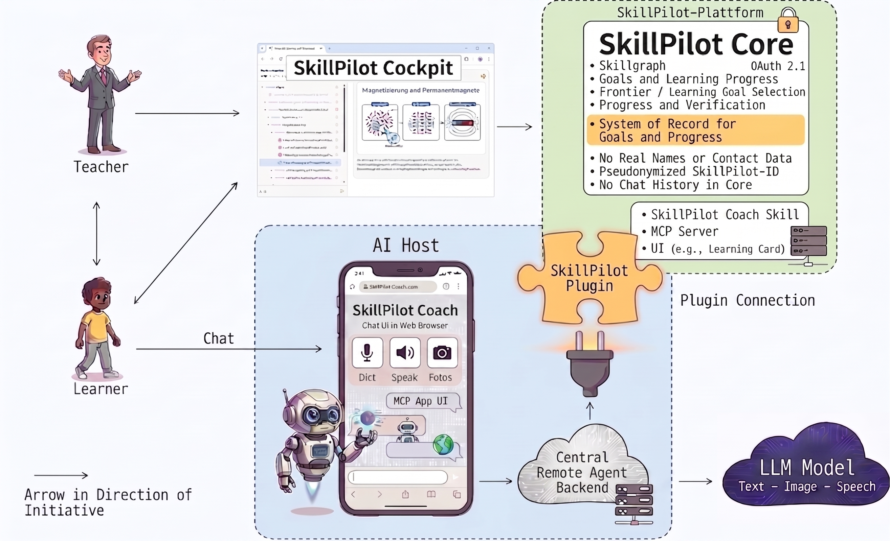
Pseudonym Instead of Identity
Learning states are managed under a permanent pseudonymous SkillPilot ID. Individual use does not require registration with a name or email address. The ID remains in SkillPilot, should be backed up as a protected ID file, and is not sent to ChatGPT or to the learning coach. SkillPilot stores the data needed for learning state, navigation, and traceability.
Session Shielding Toward the AI Frontend
Each deliberate start of SkillPilot Coach v1 from the first-party web app creates a new random learningSessionId with an absolute lifetime of exactly 24 hours and opens a new prepared chat. SkillPilot inserts the session automatically into the prepared start message; the learner does not need to copy or manage any technical value. Its lifetime is not extended by use or by an OAuth refresh. The session carries the German or English communication locale selected in the confirmed context. One language-neutral V1 app serves both languages. OAuth authorizes the app but does not select the learner or learning context.
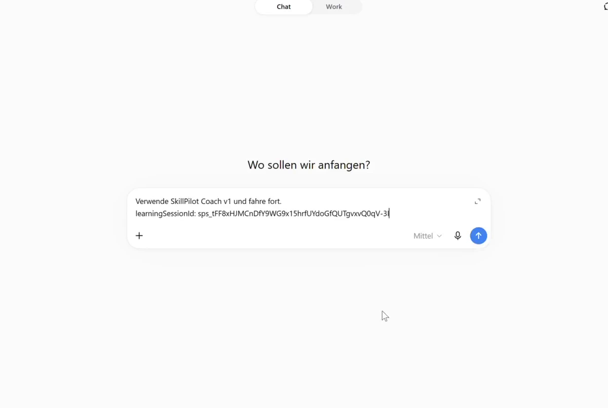
The backend connection is secured independently through several layers: SkillPilot accepts functional access only through the admitted and authenticated coach app and only together with a valid learning session. App authorization alone does not open a learning state, and a learning session alone does not grant backend access. This keeps integration permission and the time-bounded learning context deliberately separate.
Dialog Content Is Decoupled
The SkillPilot backend does not store the complete learning-coach chat history. It processes only the purpose-bound information needed for learning state, navigation, and authorized actions. The complete chat history in ChatGPT is governed by ChatGPT/OpenAI terms. This keeps SkillPilot's central data store limited.
Recommendation for educational institutions: Clear guidelines on which data should not be shared in learning-coach chats (sensitive personal data) and how learners are supported safely.
Mapping Inside the Institution (Local)
The mapping "who is which pseudonym?" stays with the institution/teacher and is stored locally (e.g., in protected storage) - not centrally.
AI Frontend / Provider Boundary
The learning-coach dialog for SkillPilot Coach v1 takes place in ChatGPT in a browser and is governed by the operational and privacy framework of ChatGPT/OpenAI. The first-party SkillPilot web app is responsive and can also be used in a mobile browser; native ChatGPT apps are not currently part of the supported workflow. The underlying operating system is not part of the support promise. Further provider integrations are kept separate and released only after a complete end-to-end acceptance test and a review of their privacy boundaries.
For contexts with higher sovereignty requirements, further AI backends up to local models are planned. They must reliably meet the required properties for tool use, stability, privacy boundaries, structure, and didactics.
4.2 Chain of Custody: Integrity & Traceability
To keep learning states portable and verifiable, SkillPilot uses a chain-of-custody pattern.
- SkillPilot accepts learning-progress changes only through admitted and authenticated integrations.
- Write access applies only through the admitted coach app, within an active short-lived learning session, and limited to the specific operation.
- The permanent pseudonymous identifier is not disclosed to the AI frontend.
Signed Exports
Learners can export profile + progress. The server cryptographically signs these exports so offline manipulation is detectable. Today, the export primarily signs state data (mastery/status), scope information, timestamps, and provenance/integrity metadata. It is therefore not a substitute for a full archive of all underlying dialogs or artifacts.
Data Provenance on Import
On import (e.g., transfer, backup), the full provenance chain can be carried along. This makes it visible whether a state was continued or taken from elsewhere.
Important: Chain of custody protects integrity and provenance - it is a transparency tool, not a complete fraud-prevention system.
5. The Ecosystem: Content & Standards
5.1 Status Quo: Available Content (Examples)
SkillPilot is not just a concept: it already contains curricula and standards as starting points. Their quality is reported through the machine-readable M0-M7 maturity model. It distinguishes, among other things, graph integrity, jurisdiction coverage, route coverage, assessment-ready tasks, semantic atomicity, memory-card traceability, and approved visualizations. A maturity level always applies only to the precisely named scope.
The generated quality status and the Curriculum Directory are the authoritative current sources. This keeps the whitepaper accurate as more curricula are added or a scope reaches a new quality level.
Curriculum Champions (practice anchor):
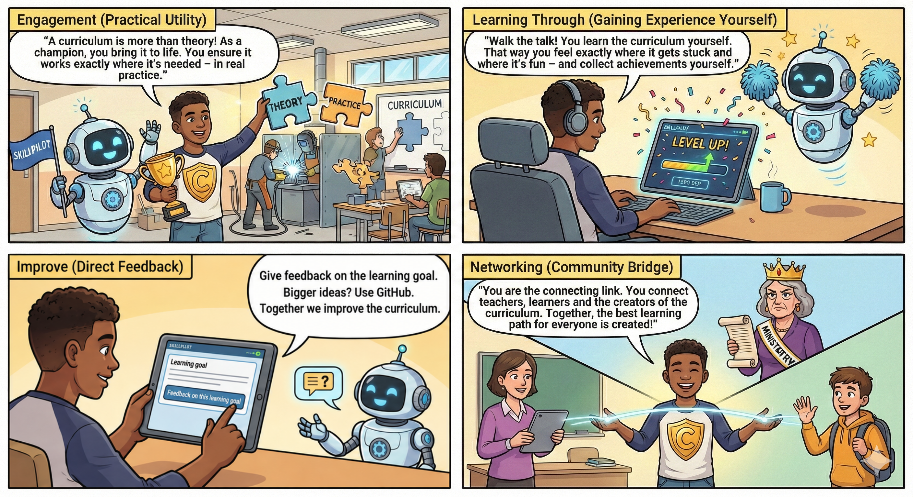
- Champions take responsibility for a curriculum or a clearly scoped topic area. - They work through learning goals themselves and report errors or unclear content directly on the relevant goal wherever a feedback entry is available. - Larger, cross-cutting or technical topics, and feedback on other curricula, are collected on GitHub. - The Champion role is optional. Public goal feedback does not require Champion registration or a GitHub account. - Champion profiles show learning progress and available quality status, not rankings by feedback volume or Issues/PRs.The QA process does not only cover curricula: the SkillPilot AI learning coach is continuously qualified in real-world use so that the experience remains reliable and didactically sound across curricula.
Schools (examples from available curricula)
Bavaria: - Grundschule (Primary School, Grades 1–4) - Mittelschule (Middle School, Grades 5–10) - Realschule (Secondary School, Grades 5–10) - Gymnasium (Academic High School, Grades 5–13) - Fachoberschule & Berufsoberschule (Vocational High School) - Wirtschaftsschule (Business School)
Hesse: - Gymnasiale Oberstufe (G9, Secondary II) - Gymnasiale Mittelstufe (G9, Secondary I)
Higher Education (Bologna-relevant)
- Uni Heidelberg: Bachelor Biosciences, Master Molecular BioSciences, Physikum (Medicine)
- Uni Mannheim: Bachelor Business Administration (BWL), Bachelor Law, Master Law
- TU Darmstadt: Bachelor Computer Science
- TU Munich: Bachelor Computer Science (Informatics), Bachelor Mathematics, Bachelor Physics, Master Quantum Science and Technology, Master Theoretical and Mathematical Physics, Executive Master of Business Administration (MBA)
Languages (CEFR A1-C2)
- English (A1-C2)
- French (A1-C2)
The listed curricula are examples of available content and do not automatically share the same maturity level. The authoritative value is always the M0-M7 maturity of the exact displayed scope in the Curriculum Directory. Curriculum Champions complement this machine-readable quality assurance with practice feedback for clearly named scopes.
[!IMPORTANT] We invite you to actively shape this process: Become a Curriculum Champion and help ensure the quality and practical relevance of your subject area.
The content is extensible and versioned; source references are documented, and changes currently flow through GitHub (Issues/PRs).
5.2 SkillPilot in the Bologna/EHEA Context (Short Overview)
Bologna/EHEA sets the framework for outcomes, transparency, recognition, and quality in higher education. SkillPilot can support these goals, but it does not replace institutional decisions.
- Learning outcomes / competencies: Contribution: Make outcomes navigable as a skill graph; progress visible. Limit/prerequisite: Clean modeling, source references, versioning.
- Credits/workload (ECTS logic): Contribution: Support paths/prereqs and workload transparency. Limit/prerequisite: No credit awarding; rules remain institutional.
- Recognition/mobility: Contribution: Evidence + signed exports as preparation/support. As described in Chapter 4.2, signed exports primarily secure state data and provenance; stronger recognition processes may require additional institutional evidence. Limit/prerequisite: Recognition remains a formal process.
- Quality assurance: Contribution: Signals about hurdles/paths for curriculum development. Limit/prerequisite: QA processes + transparent AI rules required.
6. Governance & Community: Open Source & Invitation
SkillPilot is released as open source under the Apache-2.0 license - an invitation to include established stakeholders rather than displace them:
- Institutions retain sovereignty over curricula and content.
- Reviewed visualizations, tasks, and memory decks can already be linked directly to learning goals; additional content formats remain extensible.
- Open interfaces enable contributions and integration.
Governance & quality assurance (currently via GitHub + Champion program): - Feedback flows through GitHub Issues, often initiated by champions. - Changes to the curriculum/graph run through pull requests (review on GitHub). - Versioning follows GitHub history; curriculum sources are referenced. - More advanced governance mechanisms (e.g., expert review boards, QA processes, overlays) are possible in the future.
Initiator: The legal entity behind SkillPilot is enpasos GmbH. We invite partners to develop SkillPilot further together - in content, didactics, and technology.
Start your pilot immediately and without registration (ID-based): create or load your pseudonymous SkillPilot ID, back it up as a protected ID file, and configure your Personal Curriculum. A guide for the 5-minute start can be found in the Quickstart. Note: Your ID is the only key to your data - keep the protected ID file safe.
More transparency: GitHub Documentation Graph definition